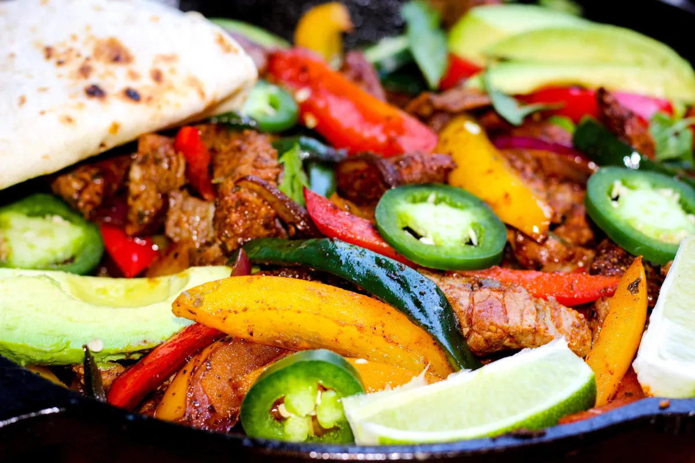

Fajitas

Fajitas are a Mexican food dish where you cook steak or chicken with cooked vegetables
Ingredients
- Steak
- Chicken
- Avacado
- Green and Yellow Peppers
- Small chiles
Steps
- Cook the Steak and Chicken
- Put vegetables in the pan when meat is about half done
- Stir until meat is fully cooked
- Put the cooked meat into a folded tortilla